Bad Optimus
You are here: Home > Silliness > Bad OptimusThis is a page dedicated to the most atrocious Optimus Prime outfits that Google Image Search can find.
It's quite simple really.
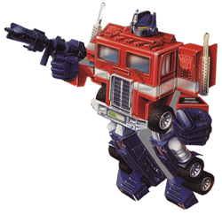This is Optimus Prime.
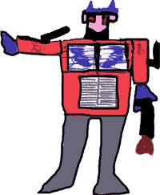This... Is not.
It's not that I'm putting down the individuals here - it's obvious that a lot
of work and love has gone into the creation of these costumes. I'm sure I couldn't whip up
anything as good (well, except maybe for Shithouse Ninja Optimus). It's just
that, in part, I'm questioning the rationale of doing it in the first place, and being a cranky old bastard at the same time.
Thanks go to Alan for supplying a couple of awesome new Optimii - if you have
a new Optimus to contribute, email me.
P.S. - an update: Thanks to all the various folks who have sent in Optimii. I had no idea there were so many out there, but I suppose
I should have guessed, given the nature of the Internet. Anyway I've been really lazy busy and haven't loaded them up yet.
But I promise I will. I will also be loading some decent pictures of the UBER
OPTIMUS that Daniel very kindly gave me.
P.P.S. - another update: One good pisstake deserves another, and my mate Nathan has done just that. Not that I mind - being a character in a webcomic is cool!
P.P.P.S. - I'm pleased to report that this page is now the number one Google hit for "Optumus Prime Costume". I promise to put up the Bad Optimus II Page soon!
P.P.P.P.S. - So, who thinks the Transformers movie is going to suck? My money's on not enough robot destruction and waaay to much human crap. We'll see, hey.
Anyway, on with the freakshow.
{kind=link}
{kind=link}
| Sumo Optimus | |
|---|---|
| 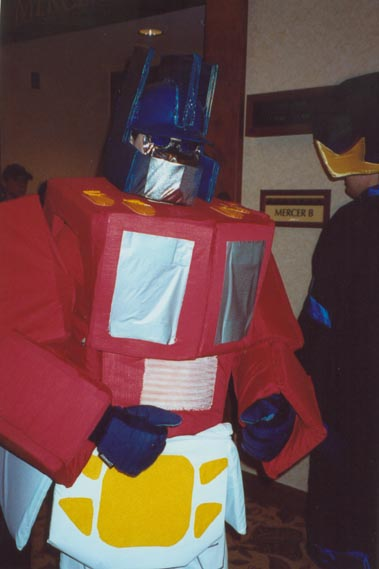 | This is the sort of thing I'm talking about. Some effort has been gone to - but the execution is
really quite terrible. He doesn't even have exhaust pipes - even the kid's
drawing above has THOSE. The helmet is nicely shaped, but the eye area lets
it down, and I'm not sure what those orange spots on his shoulders are, but
I think his parrot has been drinking too much prune juice. I'd mention
the groinal area too, but it speaks for itself, and there's worse to come in that department. The overall effect is that of something you'd normally punch, or inflate with air and jump on. I suppose I should assign a point for sheer solidity. Overall rating: |
| Sexy Bighead Optimus | |
|---|---|
| 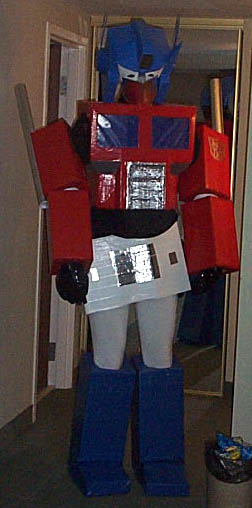 | This shambles at least has exhaust pipes. But that's where it's saving graces end
really; the head is a trifle large. Apparently this Optimus suffers from an
inflated ego. He also appears to be wearing a miniskirt, which suits his feminine legs and figure. The elbow joints also look a trifle restrictive. I mean, come on, how's he supposed to fight Megatron if he can't even give someone the forks convincingly. Overall Rating: |
| Latino Optimus | |
|---|---|
| 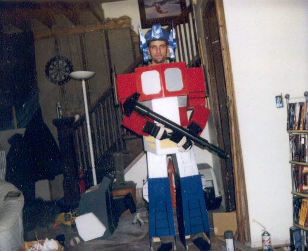 | These next two images form a set. I'm not sure why, but the guy in the Optimus suit
reminds me of my cousin, Franz. Eventually Franz will find this page, so let's
hope he doesn't kick my arse next time he sees me (which - despite my own Taekwondo
endeavours - he would have no trouble doing, having done about 20 years more
martial arts training than I have). Anyway I digress. These costumes are actually quite good. Nice detail, real movable arm joints, actual guns and logos. In fact, I only have three criticisms; 1) leave the masks ON guys, 2) Optimus has no wheels, and 3) Megatron is missing his all-important penis-trigger. Overall Rating: |
| 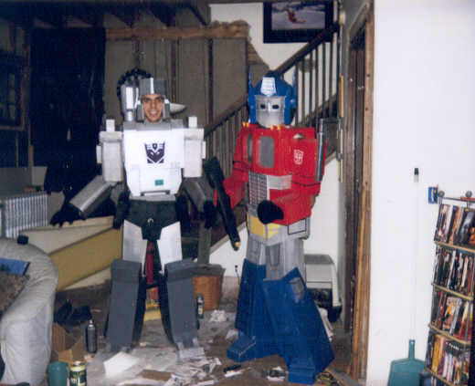 | |
| Bargearse Optimus | |
|---|---|
| 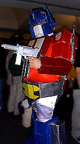 | At first, I thought these two were separate Optimuses (Optimii?).
Then, as I compared the two images, I realised that disturbing
truth that they were one and the same. Sure, the costumes are
similar, but that gut is unmistakable. (Oh, don't forget the silver spray painted toy machine gun either.
Very authentic). |
| 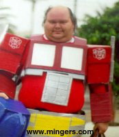 | |
| Rasta Optimus | |
|---|---|
| 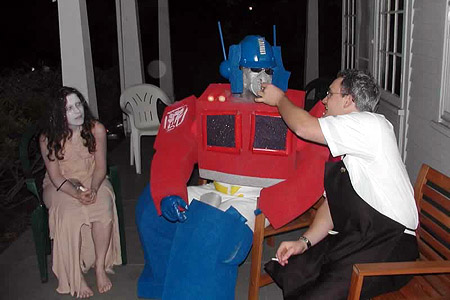 | This Optimus knows how to party. He may be missing his
exhaust pipes, but that doesn't stop him toking on another sort. His woman is standing by faithfully. Not sure what her story is, but she could do with a little less foundation. Maybe Optimus likes her that way. This Optimus digs peace, but don't take his stash, you'll regret it. Overall rating: |
| Don't-Fuck-With-Me Optimus | |
|---|---|
| 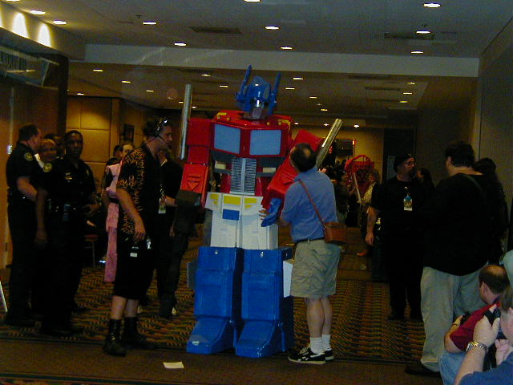 | This picture tells a story. The balding guy on the right
has made a big mistake - he's touching Optimus's nether region.
This is not the sort of Optimus you want to do that to. He'll
rip off your head and lay some robot cable down your neck. |
| Too-drunk-to-fuck Optimus | |
|---|---|
| 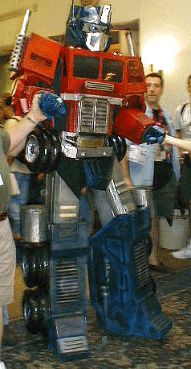 | This Optimus is awesome. Not only is he the only Optimus
so far to acually have WHEELS, the detailing is supurb. This is
what an Optimus costume SHOULD look like! |
| Something-feels-damp Optimus | |
|---|---|
| 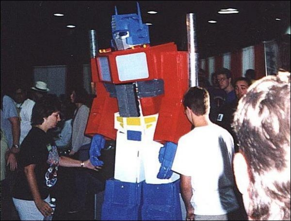 | Sometimes it sucks to be Optimus. Not only do you have
to battle Megatron and the various forces of evil, you also have to
go to nerd conventions. Convention Nerds are bad enough when they're behaving, but they're even worse when they decide to piss on your leg. Who knows why this guy taking a slash on Oppie's leg, perhaps the guy is a staunch Decepticon supporter. Whatever the case, he's about to get backhanded into next year when Optimus realises what the warm wet sensation is on his foot. (Pretty good costume too, but could do with a bit more detailing). Update: As various people have pointed out, Something-feels-damp Optimus is one and the same as Don't-fuck-with-me Optimus. I choose to keep them separate, and give them different ratings, just to be a contrary inconsistent bastard. Overall rating: |
| Shithouse Ninja Optimus | |
|---|---|
| 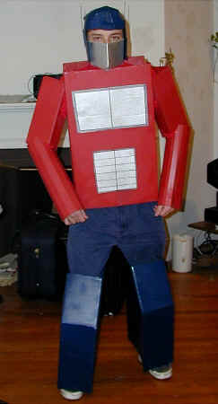 | And lastly, we have this. As the Comic Book Guy from the Simpsons
would say, "worst Optimus ever". I'm not even gonna start on this one. Nothing I write here will be as funny as just looking at the picture. It speaks for itself. The fellow inside this might well be glad his face is covered, but I salute him. He's brought a lot of joy to visitors of this page. :) In fact, I would almost say he's the best Optimus ever! Overall rating: |
So, did you smile? Should an ad appear appropriate to your needs... feel free to investigate. You might want to look around my site too, before you go. Click here to read about my epic trip around Australia. Click here for various other picture galleries.
If you're feeling particularly generous, you can even click on the button below to send me some dot-com riches. Go on, I bet you a dollar that the Transformers movie will be really pretty, but overall it will suck.